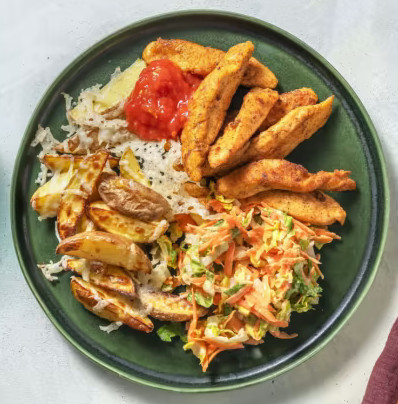

Spicy chicken strips with carrot slaw

Description
Delicious finger food and with it explicit permission to eat with your hands for once - great!
Ingredients
- 250g Chicken breast fillet
- 400g Waxy potatoes
- 2 Carrots
- 1 Lettuce heart (Romana)
- 1 Tomato
- 1/2 Lime
- 20 g Grated hard cheese
- 25g Mayonnaise
- 50 g Ketchup
- 2 g Paprika spice mixture
- 1g Rubbed thyme
- 8g Honey
- 4 Tablespoons oil
- 2 Tablespoons flour
- Salt & Pepper to taste
Steps
- Preheat the oven to 220 °C top/bottom heat or 200 °C convection oven.
Peel washed potatoes as desired and cut into finger-thick wedges.
Spread potato wedges on a baking sheet lined with baking paper.
Spread 1 tbsp oil and 1 pinch of salt on top and bake for 30 - 35 min.
After 25 minutes, turn the wedges over and sprinkle with hard cheese.
Finish baking until cheese is crisp and lightly browned.
Meanwhile, continue with recipe.
- Peel carrots and grate coarsely into a bowl.
Halve lettuce heart and cut into fine strips and also add to the bowl.
Wash lime hot and finely grate 1 tsp of the peel.
Add 1 tbsp lime juice to the bowl and mix everything with honey, mayonnaise and 1 tbsp oil.
Season with salt and pepper and set aside.
-
In the meantime, place chicken breasts individually between 2 sheets of plastic wrap
and flatten either with a rolling pin or a frying pan so that they are only about 2 cm thick.
Cut flattened chicken breasts into 6 to 7 long strips and salt.
-
In a second large bowl, mix 2 tablespoons flour with 0.5 teaspoon lime zest,
Paprika spice mixture and thyme. Season with salt and pepper.
Mix everything well. Add chicken strips to flour mixture and coat thoroughly.
-
Heat 2 tablespoons of oil in a large frying pan over medium heat.
Tip: Let the oil get really hot so the chicken strips get nice and crispy.
Fry half of the chicken strips in the pan until everything is golden brown,
3 - 4 min. on each side. Transfer to a plate covered with paper towels and cover with foil.
Repeat with remaining chicken strips. Season with a little salt when cooked.
-
Reheat chicken strips in oven for a few minutes if needed.
Coarsely grate the tomato into a small bowl and mix with the ketchup.
Serve chicken strips together with the ketchup, potato wedges and salad.
Enjoy your meal!